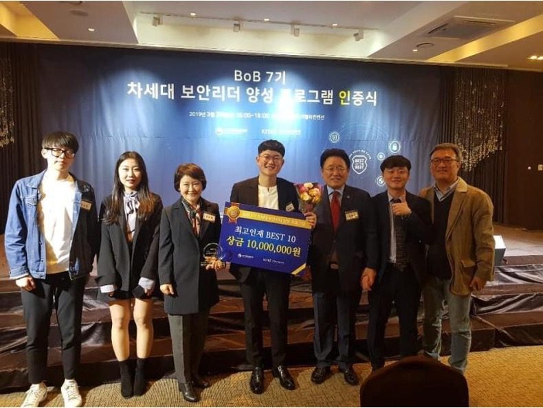
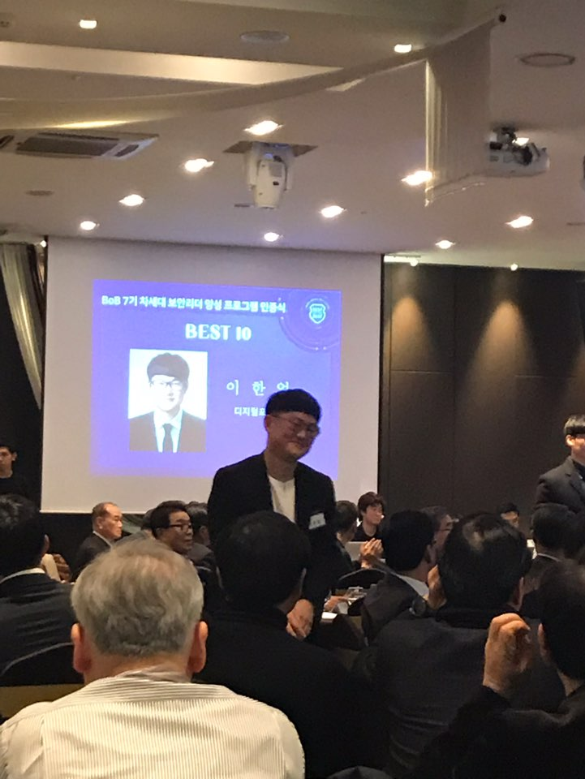
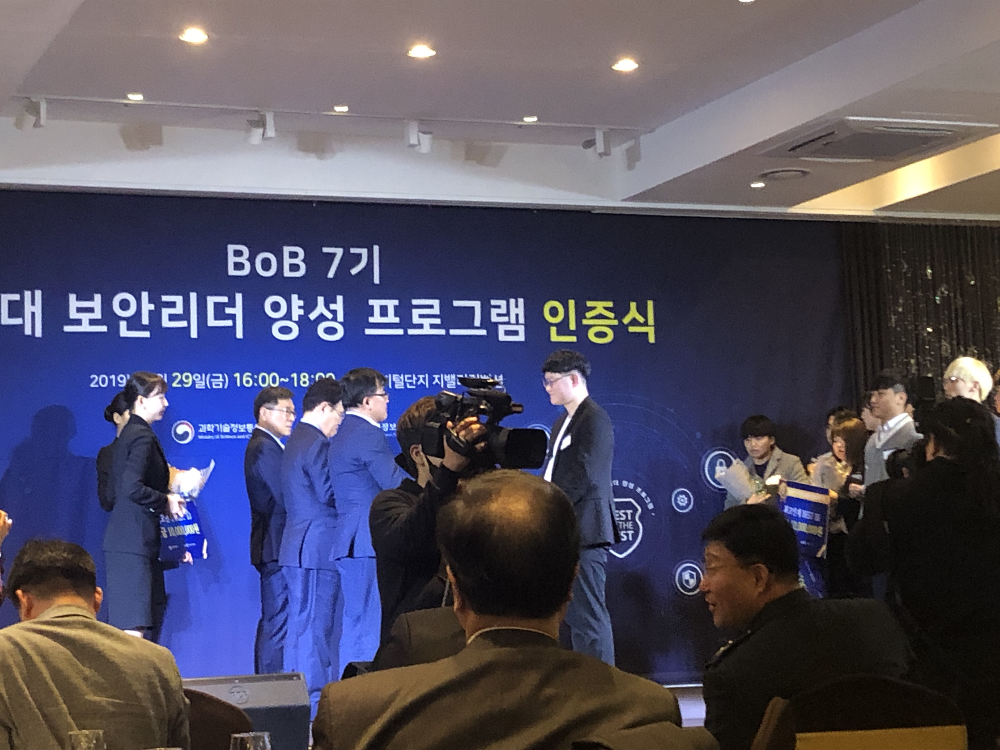
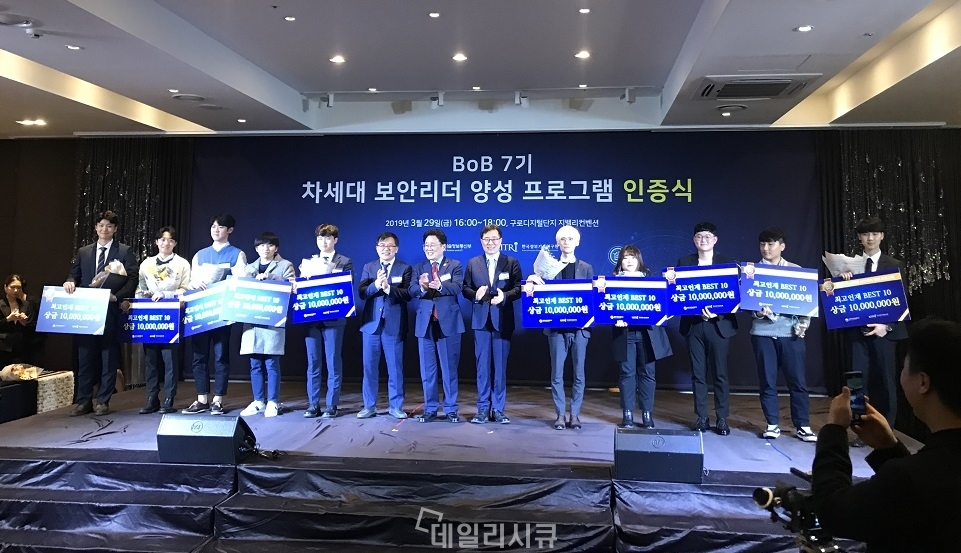
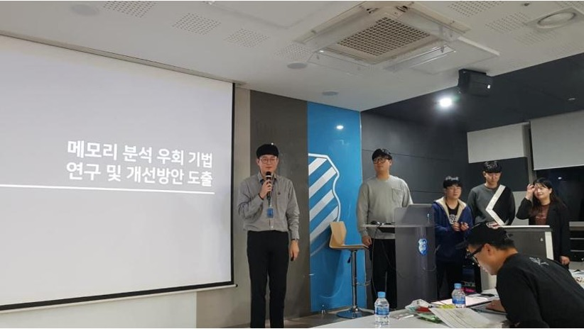
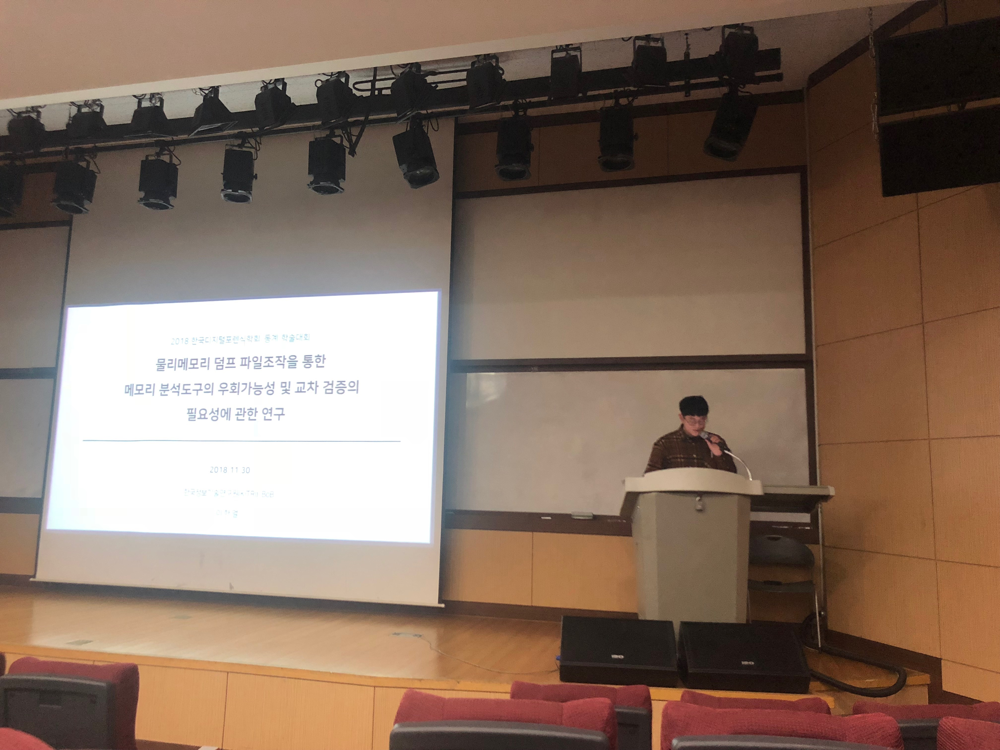

Overview
Best of the Best (BoB) is Korea's most selective white-hat hacker training program, run by the Ministry of Science and ICT. Out of 160 trainees accepted nationwide, I was selected as one of the Top 10 Security Leaders — the highest distinction given within the program.
I led Team MalGround as Project Manager while simultaneously contributing as a researcher. Our focus was digital forensics and memory analysis: specifically developing bypass techniques for kernel-level memory analysis to understand how sophisticated malware evades detection at the OS layer.
Research — PyeongChang Olympic Destroyer
The centerpiece of our work was a forensic reconstruction of the 2018 PyeongChang Winter Olympics Destroyer malware attack — a sophisticated destructive attack that targeted the Olympic IT infrastructure on opening ceremony night. Using Volatility (the industry-standard memory forensics framework), we performed deep memory artifact analysis to trace the malware's execution chain and lateral movement patterns.
This research resulted in a submission to the Volatility Foundation Analysis Contest, an international memory forensics competition, where Team MalGround placed 2nd internationally. The techniques developed during BoB later fed directly into my Master's thesis research at Korea University on kernel modification detection.
Results

Grand Prize (Minister's Award) ceremony — Top 10 Security Leaders
Award ceremony with the Ministry of Science and ICT
Receiving the Minister's Award
Award ceremony Award ceremony
Award ceremony
Team MalGround — Presentations
The following slides document Team MalGround's research journey from team formation through the final presentation — six milestones across the program.
Proof of work

Presenting as Project Manager
Presenting research findings